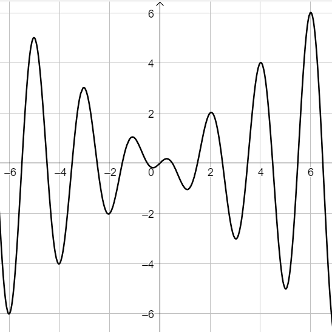
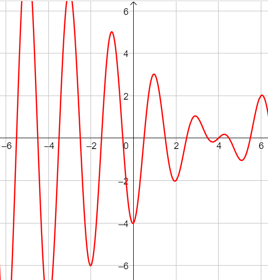

Data la funzione \(f:\quad y = \dfrac{x^2}{x - 1}\), scrivere la legge che definisce la funzione \(g\), avente
come grafico lo stesso di \(f\) il traslato di \(5\) unità verso sinistra.
Il grafico della funzione \(f:\quad y = x\,cos(\pi\,x)\) è rappresentato nella seguente figura

Scrivere la legge che definisce la funzione \(g\) che ha il seguente grafico
